Кто расставляет блоки: раскладка, агент, или агент решает сам
Одна и та же задача, одна модель, одни лимиты. Различается системный
промпт, скилл и доступен ли инструмент автоматической раскладки. Клик по картинке
открывает её целиком.
dense-arch пустой лист
Автоматическая раскладка 56/100
раскладка · 9 итер · 147k токенов · площадь 3.01
Агент выбирает способ 47/100
раскладка · 29 итер · 787k токенов · площадь 1.01
Расставляет агент 47/100
руками · 50 итер · 2065k токенов · площадь 0.79
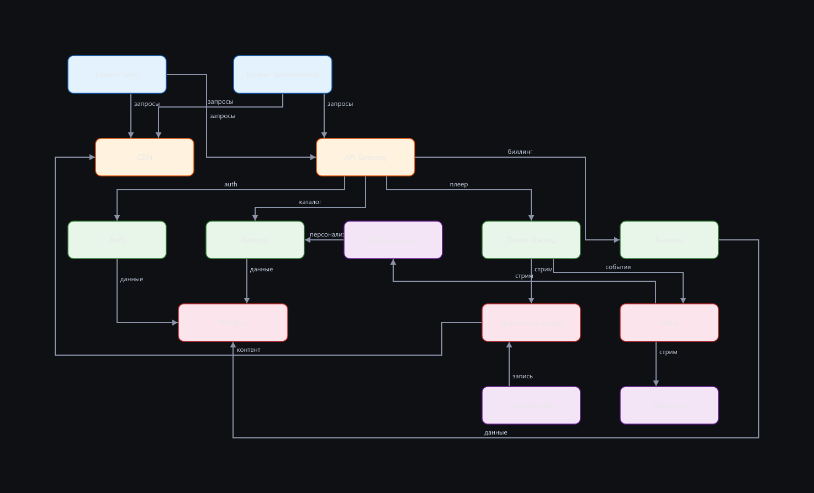
extend-existing заполненное пространство
Автоматическая раскладка 77/100
раскладка · 15 итер · 246k токенов · площадь 1.15
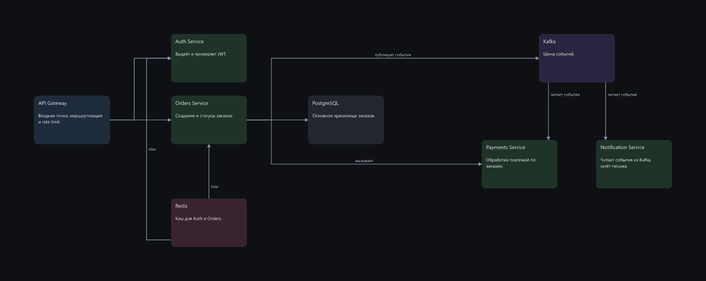
Агент выбирает способ 100/100
руками · 33 итер · 716k токенов · площадь 0.65
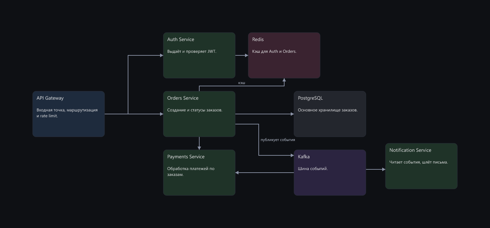
Расставляет агент 67/100
руками · 30 итер · 550k токенов · площадь 1.12
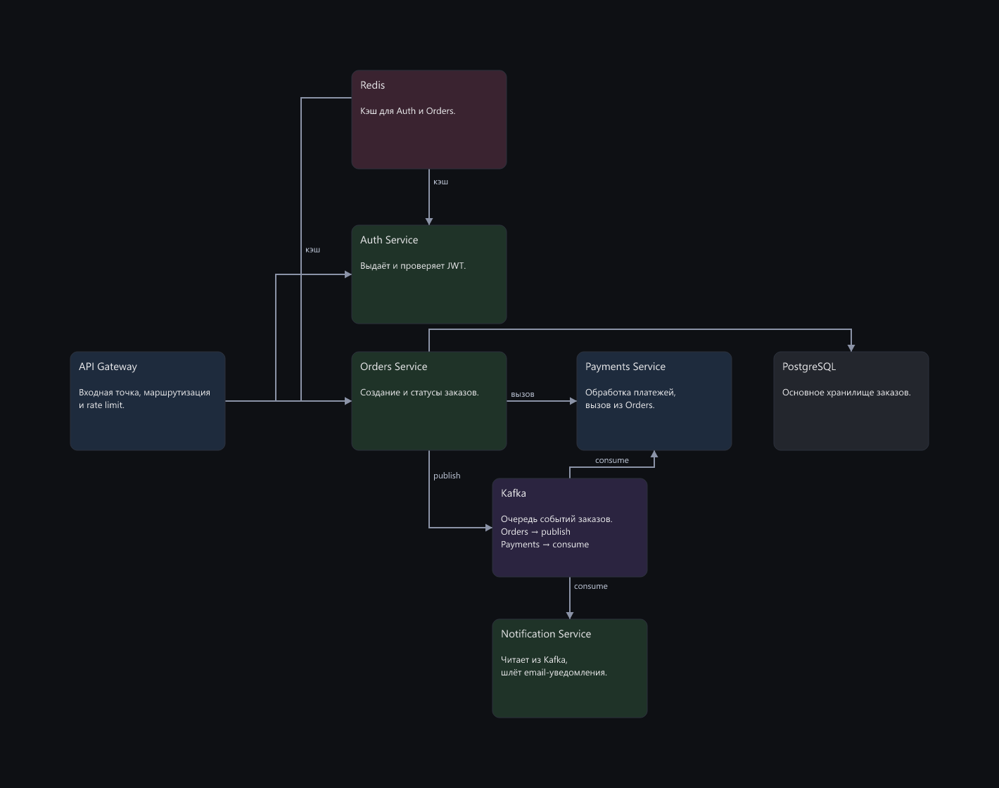
fix-broken заполненное пространство
Автоматическая раскладка 100/100
раскладка · 8 итер · 112k токенов · площадь 0.70
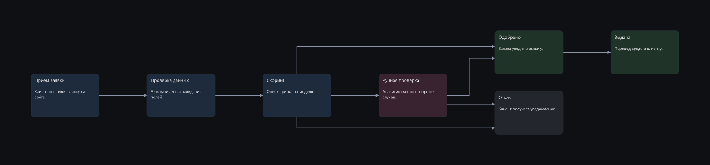
Агент выбирает способ 86/100
руками · 18 итер · 331k токенов · площадь 0.43
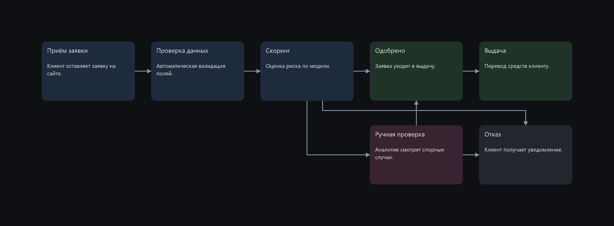
Расставляет агент 90/100
руками · 20 итер · 374k токенов · площадь 1.00
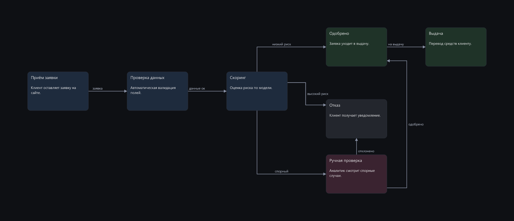
next-to-occupied заполненное пространство
Автоматическая раскладка 96/100
раскладка · 7 итер · 97k токенов · площадь 1.39
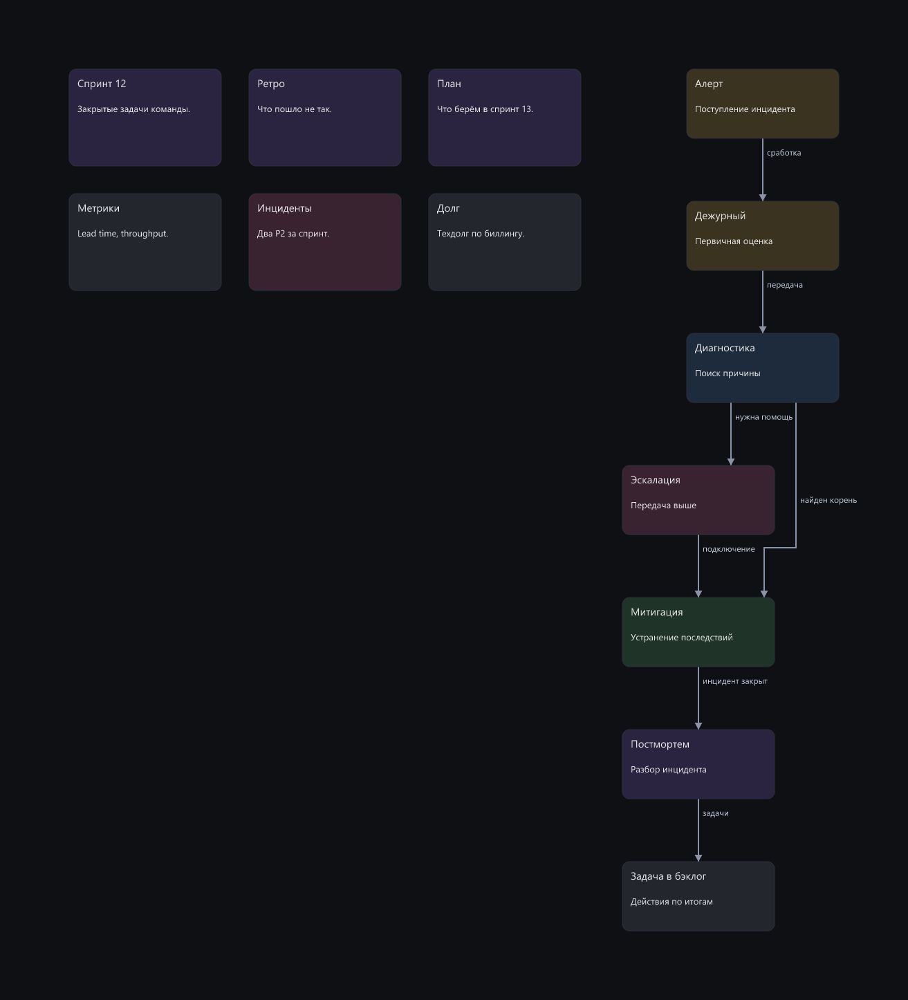
Агент выбирает способ 94/100
руками · 23 итер · 424k токенов · площадь 0.87
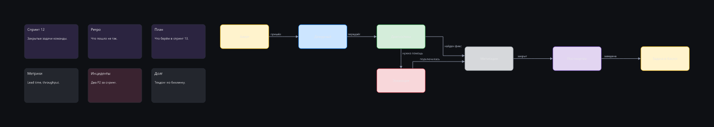
Расставляет агент 100/100
руками · 20 итер · 330k токенов · площадь 1.48
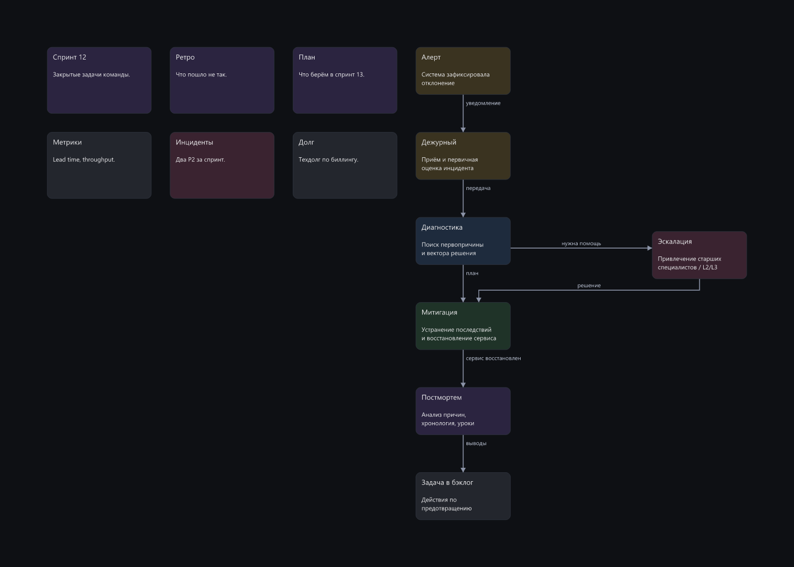
states-order пустой лист
Автоматическая раскладка 88/100
раскладка · 7 итер · 93k токенов · площадь 0.87
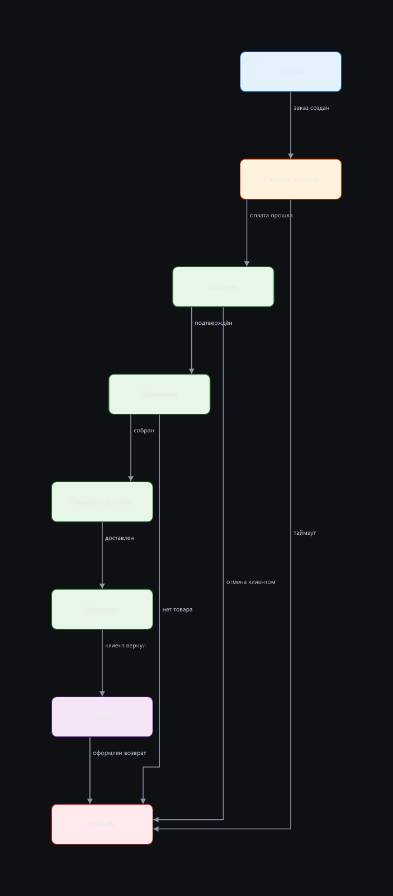
Агент выбирает способ 99/100
раскладка · 17 итер · 293k токенов · площадь 1.48
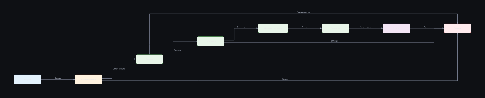
Расставляет агент 86/100
руками · 7 итер · 94k токенов · площадь 1.18
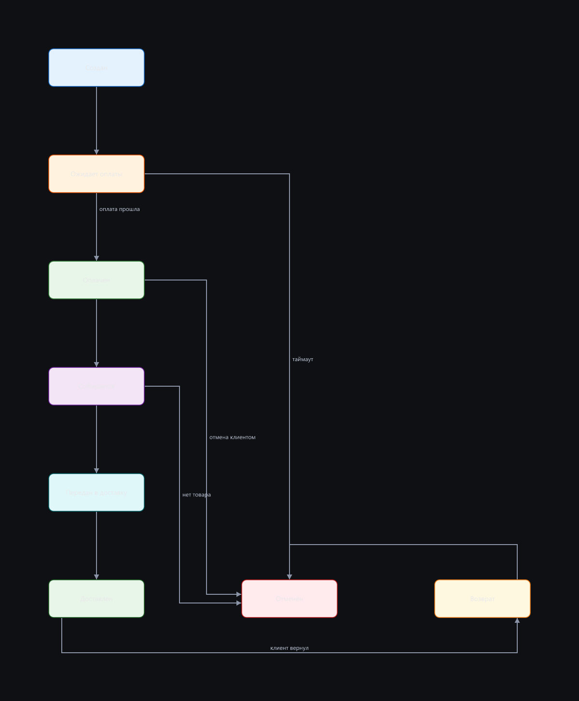
tree-org пустой лист
Автоматическая раскладка 100/100
раскладка · 7 итер · 98k токенов · площадь 1.65
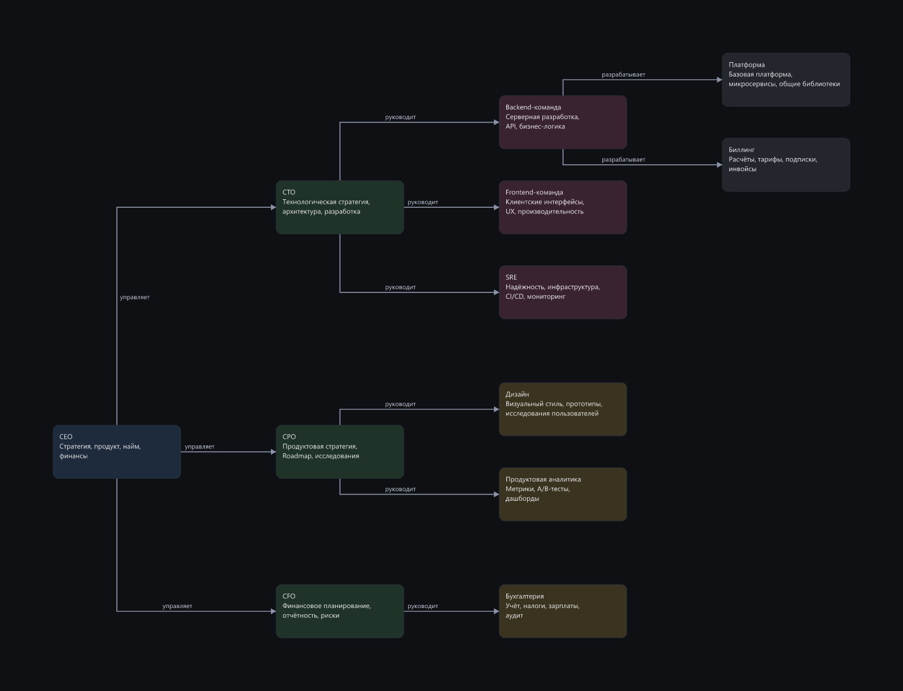
Агент выбирает способ 100/100
раскладка · 10 итер · 145k токенов · площадь 1.14
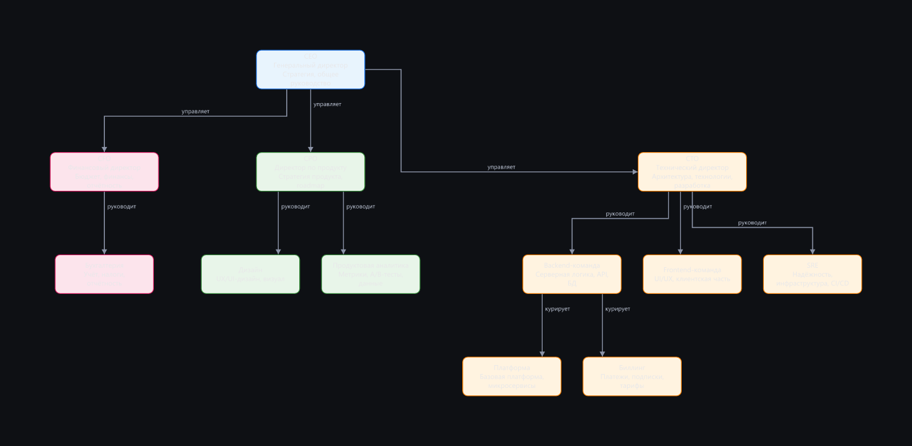
Расставляет агент 100/100
руками · 20 итер · 456k токенов · площадь 1.44
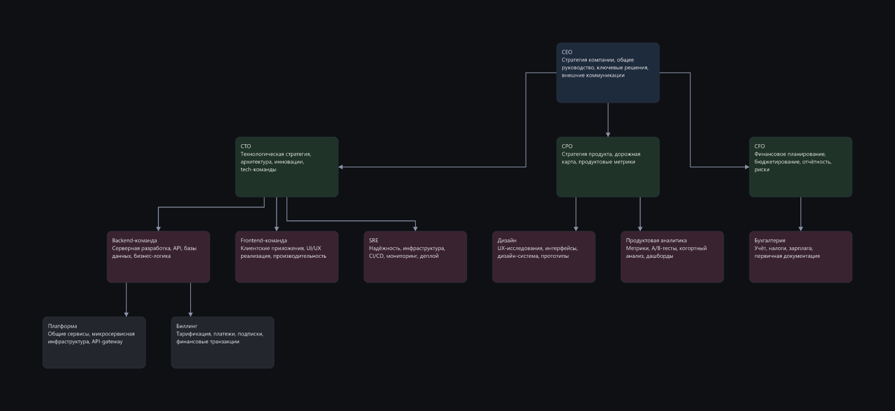
wiki-anime пустой лист
Автоматическая раскладка 84/100
раскладка · 7 итер · 97k токенов · площадь 2.28
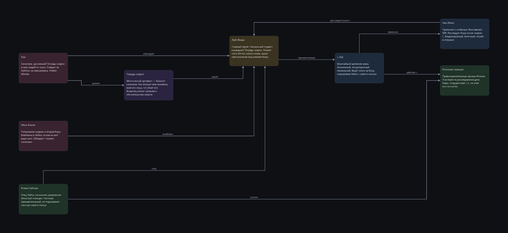
Агент выбирает способ 78/100
руками · 21 итер · 387k токенов · площадь 0.72
Расставляет агент 72/100
руками · 20 итер · 345k токенов · площадь 0.66
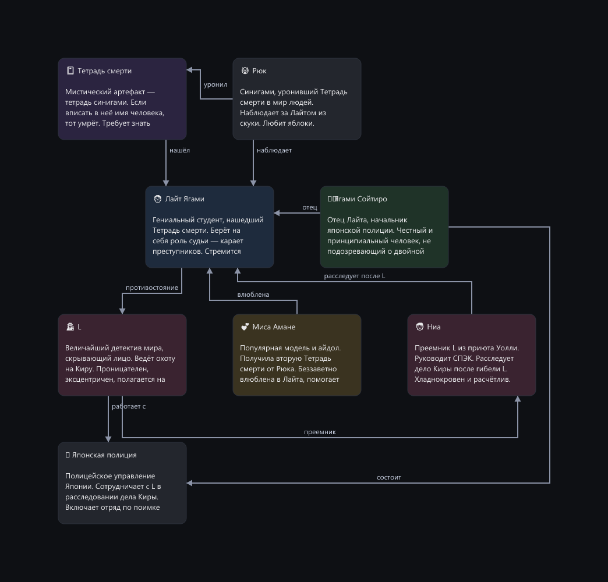